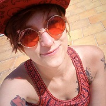

Angie Brooklyn

After All This Time ? Always.
CV
Portfolio
Contact
Liens
Mes Experiences
2010 à aujourd'hui : Photographe (Mariages, festivals, reconstitutions, bapteme, anniversaire, spectacle..)
Mon travail ici
2010 : Stage Infographiste chez Yvelines Marquages Enseigne
2011 : Stage Web Designer à
Repères Médias
Mes Contrats
Novembre 2017 à aujourd'hui : Animatrice/Cosplayeuse sur le Stand Super
MARCUS
World/
Nemco Show
Juin à Juillet 2018 : Vendeuse au Geek Store Paris Vill'Up
Août à Novembre 2017 : Animatrice/Vendeuse au Lego Store Disney Village
Novembre 2016 à Janvier 2017 : Habilleuse Personnages Parades&Spectacles à Disneyland Paris
Avril 2013 à Août 2016 : Operatrice Animatrice Attraction à Disneyland Paris
Mes Formations
2017/2018 : Formation autodidacte Artiste Tatoueur et Web Design
Juillet 2018 à aujourd'hui : Formation HTML5 & CSS3 via
Open Class Room
2010 : CAP DECG Dessinatrice d'Execution en Communication Graphique